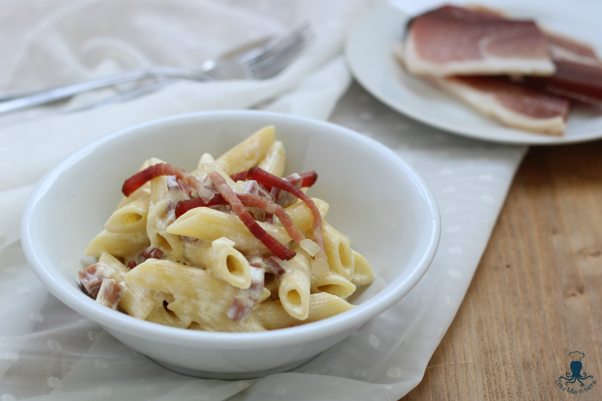

Penne with speck and cream

Description
This main dish is very easy to make but will make a great impact on your guests!
You just need to cut the speck in thin slices, add the cream and you're done.
It truly is delicious. See for yourself!
Ingredients
With the following you can make 4 portions:
- 320 g of penne (you can use any type of pasta, but we usually use penne)
- 125 g of UHT cream
- 2-3 slices of speck (3-4 mm thick)
- Salt to taste
- Parsley (Optional)
- Grana (Optional)
Steps
- Take a coocking pot or suitable pot, fill it with water and take it to boil;
- In the meantime, remove the fat from the speck slices and cut it into sticks;
- Take a saucepan and heat it up under low heat;
- (Optional) Cut the fat in small chunks (2-3 mm width) and put it in the saucepan under low heat.
The fat will melt and in a few minutes the chunks will roast. Once they're golden
(be careful, they tend to burn quickly!), take them out of the saucepan and put them on absorbing paper.
You can now decide if you want to keep some of the molten fat inside the saucepan
(it will give a lot of flavor to the cream in the following steps);
- (Optional) The golden chunks can be used as topping later.
- Take the sticks of speck and put them in the saucepan under low heat. You only have to cook them for a minute, to roast them a little;
- (Optional) You can take out a bit of speck from the saucepan to use as topping later.
- Pour the cream inside the saucepan and stir to evenly distribute the speck. Heat it up for a few minutes under low heat, avoid boiling.
If needed, remove the saucepan from the heat until the pasta is ready;
- When the water boils, salt the water and start to cook the penne;
- Once the penne are done, take them out and mix them with the sauce;
- Serve the penne inside a plate.
(Optional) You can choose to use some more ingredients as topping: speck sticks or golden chunks (very tasty)
, grana (to push on the saltiness) or even finely chopped parsley (to make it fresher).